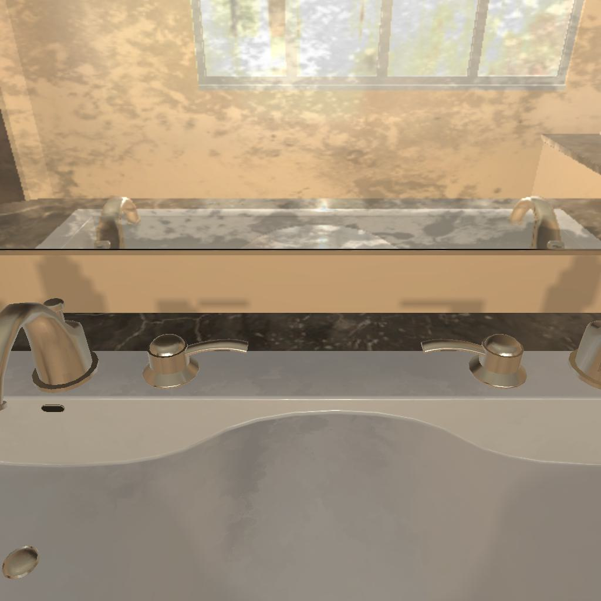

---------------------------------------------------------task: 11---------------------------------------------------------
--------------------------------------------------------------------------------------------------------------------------------------------------------------------
--------------------------------------------------------------------------------------------------------------------------------------------------------------------
Step:--------------------------------------------------------------------------13-------------------------------------------------------------------------------
----------------------------------------
VLM Prompt:
Image1:
Image2:
**Instruction**
1. Analyze the provided images to identify all visible household objects and compare the difference between images (e.h. whether the object is opened or not and taken on hand or not), focusing on those relevant to the task description "clean some soapbar and put it in bathtubbasin."
2. Use the analysis of images and the task hint "The agent must find an object of the desired type, pick it up, go to a sink or a basin, clean the object with a sink or basin, and then find the correct location to place it and put it down there. The agent does not need to use soap bottle or faucet to clean the object, and the agent just needs to do action that is "clean the object with the sink or sink basin"." to answer the question: what is the most reasonable action in the choices for the task description "clean some soapbar and put it in bathtubbasin"?
3. Decide and write the answer using the template: The answer is: (i): , where i is the real number. If there is no desired object in images, search every place based on **Initial Observation** to find the object. And if no one is exactly correct, choose a similar answer.
**Initial Observation**
You are in the middle of a room. Looking quickly around you, you can see bathtub (1), bathtubbasin (1), toilet (1), cabinet (1-2), countertop (1), sink (1), sinkbasin (1), garbagecan (1)
**Answer Choices**
(1): go to bathtub 1
(2): go to bathtubbasin 1
(3): go to toilet 1
(4): go to cabinet 1
(5): go to countertop 1
(6): go to sink 1
(7): go to cabinet 2
(8): go to garbagecan 1
(9): take faucet 1 from sinkbasin 1
(10): take faucet 2 from sinkbasin 1
(11): examine sinkbasin 1
**Answer**
Let's think step by step by following the instructions.
----------------------------------------
----------------------------------------
Original Response:
First, we identify all visible household objects in the images:
- In Image 1, we see a bathtub with a soap bar inside it. There is no faucet or water visible, so we can assume the bathtub is not currently being used to clean the soap bar.
- In Image 2, we see a sink with a faucet and handles. There is also a sink basin visible with some water and bubbles, indicating that it might have been used for cleaning purposes.
Comparing the differences between the images, we do not see the soap bar being held or cleaned in Image 2, but we do see a sink basin that could be used for cleaning.
Based on the task description "clean some soapbar and put it in bathtubbasin," we need to find a soap bar, clean it, and then put it in the bathtub basin. Since we already see a soap bar in the bathtub in Image 1, we can assume that the soap bar to be cleaned is the same one.
Given the task hint, we understand that the agent does not need to use a soap bottle or faucet to clean the object, but just needs to perform the action of cleaning the object with the sink or sink basin.
Considering the Initial Observation, we have identified that there is a sink (1) and a sink basin (1) available in the room.
Now, we can determine the most reasonable action for the task:
- Since there is already a soap bar in the bathtub, we do not need to search for another one.
- The next step would be to clean the soap bar. Since the agent does not need to use the faucet or soap bottle, the action of going to the sink (6) would be most appropriate to clean the soap bar with the sink basin.
- After cleaning, the agent would need to put the soap bar in the bathtub basin, but since it's already there, this step is unnecessary.
The answer is: (6): go to sink 1.
----------------------------------------
----------------------------------------
>>> Refine Original VLM Response and Get Pure Action: go to sink 1
----------------------------------------
-----------------------------------------------------------------
Running time: 15.85168719291687 seconds
Total Money: 5.069430000000002
-----------------------------------------------------------------
-----------------------------------------------------------------
Text Observation:You arrive at loc 5. On the sink 1, you see a faucet 1, and a faucet 2.
-----------------------------------------------------------------
UNSUCCEED